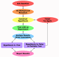

Scientific Method
The scientific method is arguably the best way yet discovered for
distinguishing truth from non-truth. The simple version looks something like
this:
- Make an observation.
- Invent a tentative description, called a hypothesis, that is
consistent with what you have observed.
- Use the hypothesis to make predictions.
- Test those predictions by experiments or further observations and
modify the hypothesis in the light of your results.
- Repeat steps 3 and 4 until there are no discrepancies between theory and
experiment and/or observation.
When consistency is obtained, the hypothesis evolves into a theory and
provides a coherent set of propositions which explain a class of phenomena. A
theory is then a framework within which observations are explained and
predictions are made.

Characteristics of scientific method
- Unbiased
- The great advantage of the scientific method is that it is unbiased.
One does not have to believe a given researcher, one can redo the
experiment and determine whether his/her results are true or false. The
conclusions will hold irrespective of the state of mind, or the
religious persuasion, or the state of consciousness of the investigator
and/or the subject of the investigation.
- Falsifiable
- For a scientific theory or hypothesis to be scientific, it must be
subject to an experiment and/or discovery that could prove the theory or
hypothesis untrue. A belief which cannot be disproved, even in
principle, is not considered scientific.
- Reproducible
- Anyone should be able to reproduce, at least in principle, the
results obtained through the scientific method. In fact, most
experiments and observations are repeated many times. If the original
claims are not verified, the origin of such discrepancies is hunted down
and exhaustively studied.
Non-Science
- Pseudoscience appears to be scientific on the surface, but in reality
breaks some of the most fundamental tenets of the scientific method.
Examples include Astrology, UFO-ology, Paranormal Studies, Many 'New Age'
philosophies and medical practices. These areas all typically are weak in
supporting evidence.
- Non-science is a means of seeking knowledge which is wholly
unscientific. This mode does not use evidence or experiment. Requires no
logic. Its tenets are based upon faith, political conviction, tradition, or
intuition. Examples include religion and mysticism.
- "Nothing happens in contradiction to nature, only in contradiction to
what we know of it."
- Special Agent Dana Scully, The X-Files
- More techniques to distinguish science from non-science can be found in
Carl Sagan's
Baloney Detection Kit
Example
Which of the following hypotheses are scientific?
Better stock market decisions are made when the planets Venus, Earth, and Mars
are aligned.
--This hypothesis is falsifiable, therefore scientific. It has been put to the
test and has failed. It is therefore a scientific hypothesis which has been
proven false.
Atoms are the smallest particles of matter that exist.
--This hypothesis is falsifiable, therefore scientific. It has been put to the
test and has failed--neutrons, protons, etc. are smaller. It is therefore a
scientific hypothesis which has been proven false.
Our Moon was formed when a Mars-sized objected collided with the Earth
billions of years ago.
--This hypothesis is falsifiable, therefore scientific. In fact, this is the
leading hypothesis for the formation of the Moon and there is convincing
scientific evidence (e.g., composition of the Moon, age of the craters, etc.) to
support it.
Space is permeated with an essence that is undetectable.
--Not falsifiable, therefore not scientific. So this is a nonscientific claim.
Albert Einstein is the greatest physicist of the 20th century.
--Unless there are some very objective criteria for this statement, this is an
opinion only, not a scientific hypothesis.
Human beings will never set foot on the Moon.
--This hypothesis is falsifiable, therefore scientific. It has been put to the
test and has failed--we have actually landed on the Moon. It is therefore a
scientific hypothesis which has been proven false.
God exists.
--No test or experiment (acceptable to all) has been proposed to confirm or
disprove the existence of God. Therefore, this hypothesis is not scientific.
Page last modified: